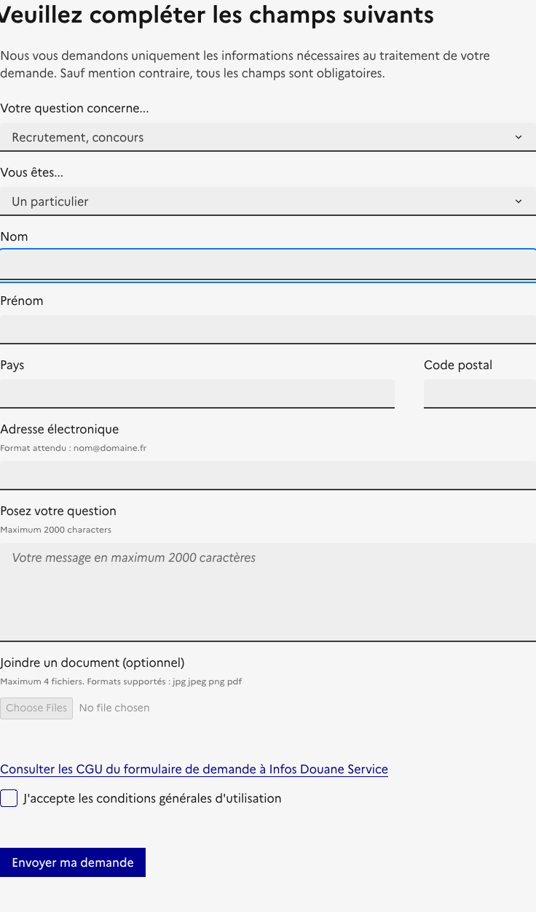
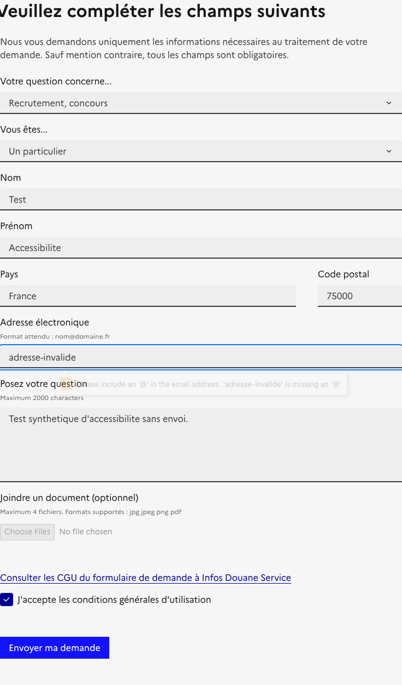
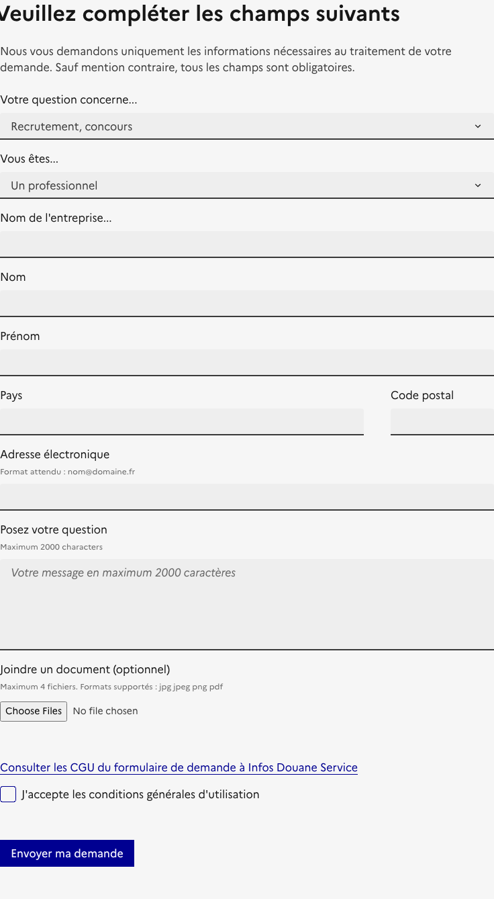
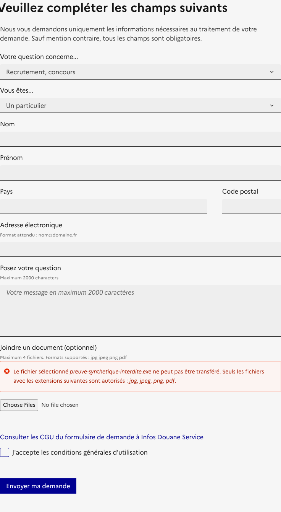
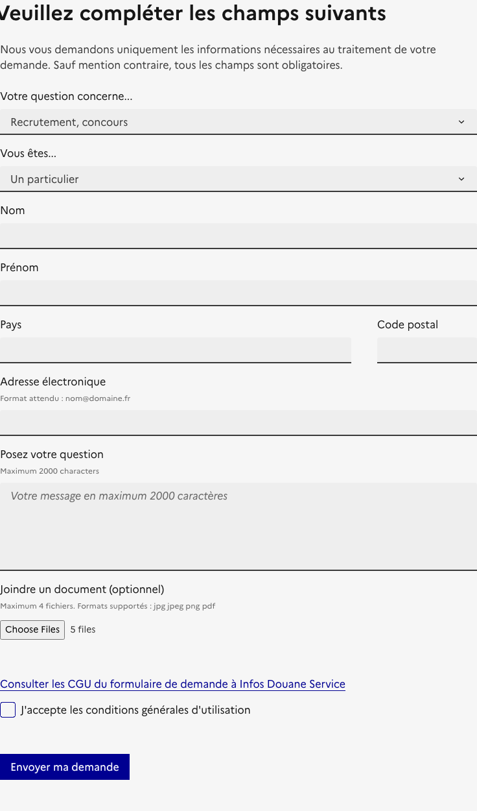

34/34
Tests inventoriés
Aucun identifiant manquant.
34 tests rapprochés des preuves archivées et d’un retest Playwright sans requête mutante.
34/34
Aucun identifiant manquant.
3
Toutes restent à valider humainement et à signer.
3 + 1
3 au thème 11 et une requalification 7.5.2.
4
Maintenus ouverts par le mode sans soumission.
Drupal.AjaxError a été observée dans la même fenêtre d’action ; l’événement pageerror ne permet pas d’en prouver le lien causal avec la garde.Consulter la preuve structurée complète.
#edit-nom, sans requête mutante.#edit-adressemail, message natif et exemple visible.#edit-document--description, cible absente.| Contrôle répété | Pages | Candidats DOM | Libellé visible observé | Portée |
|---|---|---|---|---|
input|search|query | P01, P02, P03, P04, P05, P06, P07, P08, P09 | Nom accessible : Rechercher — libellé : Rechercher | État visible non observé partout | Candidats DOM concordants — RGAA à confirmer |
input|radio|fr-radios-theme-light | P01, P02, P03, P04, P05, P06, P07, P08, P09 | Nom accessible : Thème clair — libellé : Thème clair | État visible non observé partout | Candidats DOM concordants — RGAA à confirmer |
input|radio|fr-radios-theme-dark | P01, P02, P03, P04, P05, P06, P07, P08, P09 | Nom accessible : Thème sombre — libellé : Thème sombre | État visible non observé partout | Candidats DOM concordants — RGAA à confirmer |
input|radio|fr-radios-theme-system | P01, P02, P03, P04, P05, P06, P07, P08, P09 | Nom accessible : Système Utilise les paramètres système — libellé : Système Utilise les paramètres système | État visible non observé partout | Candidats DOM concordants — RGAA à confirmer |
La comparaison couvre les neuf pages et établit seulement une correspondance exacte des candidats DOM. La visibilité dans chaque état, la notion de fonction identique et la conformité RGAA restent à qualifier humainement.
Décision publiée : C_CONFIRMEE
Complément : Non conforme étayé
9 champs portant required ne présentent aucune indication de caractère obligatoire dans leur étiquette, aria-labelledby ou aria-describedby. L’instruction générale n’est associée à aucun de ces champs.
Ouvrir le ticket candidat RGAA 11.10.2.
Décision publiée : NA_CONFIRMEE
Complément : Non conforme étayé
Le message dynamique d’extension interdite est une erreur/suggestion. Le conteneur observé porte aria-live="polite", sans role et sans aria-atomic. Il ne satisfait donc ni role="alert", ni l’équivalent aria-live="assertive" avec aria-atomic="true".
Ouvrir le ticket candidat RGAA 7.5.2.
| Critère | Test | Publié | Base probatoire | Complément | Justification |
|---|---|---|---|---|---|
| 11.1 | 11.1.1 | C_CONFIRMEE | A_RETESTER | À qualifier humainement | Le relevé conserve les mécanismes d’étiquette et un candidat calculé, mais il ne constitue pas une implémentation normative d’AccName : qualification humaine maintenue. |
| 11.1 | 11.1.2 | C_CONFIRMEE | TESTE_CONFORME | Conforme technique étayée — validation humaine requise | Les preuves comportent un contrôle technique ciblé, mais la validation humaine requise par le contrat de preuve n’est pas signée dans le registre de revue. |
| 11.1 | 11.1.3 | C_CONFIRMEE | A_RETESTER | À qualifier humainement | La variante « Un professionnel » montre Société et son étiquette ensemble, mais la visibilité et la proximité de tous les champs, notamment la recherche masquée, n’ont pas été qualifiées exhaustivement : revue humaine maintenue. |
| 11.2 | 11.2.1 | C_CONFIRMEE | NON_TESTE | À qualifier humainement | La pertinence, l’applicabilité ou le rendu nécessite encore une revue humaine ciblée ; les collecteurs automatiques ne produisent pas cette décision. |
| 11.2 | 11.2.2 | NA_CONFIRMEE | NON_APPLICABLE_CONDITIONNEL_DOM | Non applicable conditionnel — DOM observé | Le DOM observé ne contient aucune cible correspondant au mécanisme testé. Cette non-applicabilité reste conditionnelle aux états capturés et à la qualification sémantique du critère parent. |
| 11.2 | 11.2.3 | NA_CONFIRMEE | NON_APPLICABLE_CONDITIONNEL_DOM | Non applicable conditionnel — DOM observé | Le DOM observé ne contient aucune cible correspondant au mécanisme testé. Cette non-applicabilité reste conditionnelle aux états capturés et à la qualification sémantique du critère parent. |
| 11.2 | 11.2.4 | NA_CONFIRMEE | NON_APPLICABLE_CONDITIONNEL_DOM | Non applicable conditionnel — DOM observé | Le DOM observé ne contient aucune cible correspondant au mécanisme testé. Cette non-applicabilité reste conditionnelle aux états capturés et à la qualification sémantique du critère parent. |
| 11.2 | 11.2.5 | C_CONFIRMEE | NON_TESTE | À qualifier humainement | La pertinence, l’applicabilité ou le rendu nécessite encore une revue humaine ciblée ; les collecteurs automatiques ne produisent pas cette décision. |
| 11.2 | 11.2.6 | C_CONFIRMEE | NON_TESTE | À qualifier humainement | La pertinence, l’applicabilité ou le rendu nécessite encore une revue humaine ciblée ; les collecteurs automatiques ne produisent pas cette décision. |
| 11.3 | 11.3.1 | C_CONFIRMEE | NON_TESTE | À qualifier humainement | La pertinence, l’applicabilité ou le rendu nécessite encore une revue humaine ciblée ; les collecteurs automatiques ne produisent pas cette décision. |
| 11.3 | 11.3.2 | A_RETESTER | A_RETESTER | À qualifier humainement | Les quatre contrôles explicitement cartographiés sur P01 à P09 — recherche et trois choix de thème — conservent le même texte de label et candidat de nom ; la visibilité effective et la qualification « même fonction » restent humaines. |
| 11.4 | 11.4.1 | C_CONFIRMEE | A_RETESTER | À qualifier humainement | La pertinence, l’applicabilité ou le rendu nécessite encore une revue humaine ciblée ; les collecteurs automatiques ne produisent pas cette décision. |
| 11.4 | 11.4.2 | C_CONFIRMEE | A_RETESTER | À qualifier humainement | La pertinence, l’applicabilité ou le rendu nécessite encore une revue humaine ciblée ; les collecteurs automatiques ne produisent pas cette décision. |
| 11.4 | 11.4.3 | C_CONFIRMEE | A_RETESTER | À qualifier humainement | La pertinence, l’applicabilité ou le rendu nécessite encore une revue humaine ciblée ; les collecteurs automatiques ne produisent pas cette décision. |
| 11.5 | 11.5.1 | C_CONFIRMEE | A_RETESTER | À qualifier humainement | La pertinence, l’applicabilité ou le rendu nécessite encore une revue humaine ciblée ; les collecteurs automatiques ne produisent pas cette décision. |
| 11.6 | 11.6.1 | C_CONFIRMEE | TESTE_CONFORME | Conforme technique étayée — validation humaine requise | Les preuves comportent un contrôle technique ciblé, mais la validation humaine requise par le contrat de preuve n’est pas signée dans le registre de revue. |
| 11.7 | 11.7.1 | C_CONFIRMEE | NON_TESTE | À qualifier humainement | La pertinence, l’applicabilité ou le rendu nécessite encore une revue humaine ciblée ; les collecteurs automatiques ne produisent pas cette décision. |
| 11.8 | 11.8.1 | NA_CONFIRMEE | NON_TESTE | À qualifier humainement | La pertinence, l’applicabilité ou le rendu nécessite encore une revue humaine ciblée ; les collecteurs automatiques ne produisent pas cette décision. |
| 11.8 | 11.8.2 | NA_CONFIRMEE | NON_APPLICABLE_CONDITIONNEL_DOM | Non applicable conditionnel — DOM observé | Le DOM observé ne contient aucune cible correspondant au mécanisme testé. Cette non-applicabilité reste conditionnelle aux états capturés et à la qualification sémantique du critère parent. |
| 11.8 | 11.8.3 | NA_CONFIRMEE | NON_APPLICABLE_CONDITIONNEL_DOM | Non applicable conditionnel — DOM observé | Le DOM observé ne contient aucune cible correspondant au mécanisme testé. Cette non-applicabilité reste conditionnelle aux états capturés et à la qualification sémantique du critère parent. |
| 11.9 | 11.9.1 | C_CONFIRMEE | A_RETESTER | À qualifier humainement | La pertinence, l’applicabilité ou le rendu nécessite encore une revue humaine ciblée ; les collecteurs automatiques ne produisent pas cette décision. |
| 11.9 | 11.9.2 | C_CONFIRMEE | A_RETESTER | À qualifier humainement | La pertinence, l’applicabilité ou le rendu nécessite encore une revue humaine ciblée ; les collecteurs automatiques ne produisent pas cette décision. |
| 11.10 | 11.10.1 | NC_CONFIRMEE | TESTE_NON_CONFORME | Non conforme étayé | Le champ Société est facultatif mais aucune mention visible ne l’indique alors que l’instruction globale annonce tous les champs obligatoires sauf mention contraire. |
| 11.10 | 11.10.2 | C_CONFIRMEE | TESTE_NON_CONFORME | Non conforme étayé | Les champs portant required ne présentent pas l’indication de leur caractère obligatoire dans leur étiquette ou un passage de texte associé ; l’instruction globale non associée ne suffit pas. |
| 11.10 | 11.10.3 | C_CONFIRMEE | A_RETESTER | À qualifier humainement | Le premier état client utilise un message de validation natif générique sans aria-invalid ; sa capacité à identifier nommément le champ reste à qualifier humainement malgré un état serveur archivé plus riche. |
| 11.10 | 11.10.4 | C_CONFIRMEE | TESTE_CONFORME | Conforme technique étayée — validation humaine requise | Les preuves comportent un contrôle technique ciblé, mais la validation humaine requise par le contrat de preuve n’est pas signée dans le registre de revue. |
| 11.10 | 11.10.5 | C_CONFIRMEE | A_RETESTER | À qualifier humainement | Plusieurs champs portent maxlength=128 sans instruction associée. La nécessité et la formulation d’une indication de format/longueur restent à qualifier humainement. |
| 11.10 | 11.10.6 | A_RETESTER | A_RETESTER | À retester côté serveur | L’adresse électronique invalide et l’extension de fichier interdite ont produit des messages visibles. Le scénario de cinq fichiers déclenche une requête AJAX qui a été bloquée avant envoi : son véritable retour serveur reste inconnu. |
| 11.10 | 11.10.7 | NA_CONFIRMEE | A_RETESTER | À retester côté serveur | Les états natifs observés ne posent pas aria-invalid. Les états serveur archivés en posent, mais le retour réel du dépassement de quatre fichiers n’a pas été obtenu en mode sûr. L’ancien NA est donc remplacé par un retest serveur. |
| 11.11 | 11.11.1 | A_RETESTER | A_RETESTER | À retester côté serveur | Le message d’extension interdite donne les types autorisés et le navigateur indique le caractère @ manquant. La suggestion associée au dépassement de quatre fichiers reste inconnue sans réponse serveur. |
| 11.11 | 11.11.2 | A_RETESTER | A_RETESTER | À retester côté serveur | L’exemple nom@domaine.fr est visible pour l’email. La nécessité et le contenu d’un exemple dans le retour « cinq fichiers » restent à qualifier après réponse serveur. |
| 11.12 | 11.12.1 | NA_CONFIRMEE | NON_TESTE | Non applicable à confirmer métier | Le formulaire de contact ne paraît ni modifier/supprimer des données existantes, ni constituer un test, ni emporter par lui-même une conséquence financière ou juridique. Cette qualification doit être confirmée par la MOA métier. |
| 11.12 | 11.12.2 | NA_CONFIRMEE | NON_TESTE | Non applicable à confirmer métier | Le formulaire de contact ne paraît ni modifier/supprimer des données existantes, ni constituer un test, ni emporter par lui-même une conséquence financière ou juridique. Cette qualification doit être confirmée par la MOA métier. |
| 11.13 | 11.13.1 | NC_CONFIRMEE | TESTE_NON_CONFORME | Non conforme étayé | Le champ Société concerne l’organisation de l’utilisateur et ne possède pas autocomplete=organization. |





{kind=link}
{kind=link}
{kind=link}
{kind=link}
{kind=link}